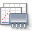
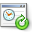
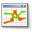
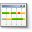

The Profiler window is typically located in the left pane of the IDE and enables you to control the
profiling session and manage profiling results.
You open the Profiler window by choosing Window > Profiling > Profiler Control Panel.
In the Profiler window you can do the following:
Control the profiling task
View the status of the current profiling session
Open profiling results windows
Take and manage profiling snapshots
See basic telemetry statistics
The Profiler window contains the following sections.
You can click the section name or node to hide or reveal the section.
Controls
This section contains the controls you can use to control the profiling session.
The following table shows the button and the profiling function it invokes.
Button
Function
Rerun Profiling Session (Ctrl-Shift-F2) Run the last profiling command again.
Stop Profiling Session
Stops the current profiling command. Also stops the target application if the application was started by Profiler.
Reset Collected Results Discards the already accumulated profiling results.
Run GC Runs Garbage Collection.
Modify Profiling Session (Alt+Shift+F2)
Opens the Modify Profiling Task dialog box and allows you to run a new profiling command without stopping the target application.
VM Telemetry
Opens the VM Telemetry Overview in the Output window of the IDE, displaying smaller
versions of the telemetry graphs.
Detach Detaches the IDE from the profiled application.
Status
This section displays the status and type of the current profiling task.
Profiling Results
This section contains the following buttons for displaying profiling results.
Button
Function

Take Snapshot
Takes a snapshot of the current profiling results and opens the snapshot in the main editor window.

Live Results
Opens the Live Profiling Results window.
Reset Collected Results
Discards the already accumulated profiling results.
Saved Snapshots
This section enables you to manage the associated with your project.
When you select an open project in the drop-down list, the saved snapshots associated with that project are displayed.
Double-clicking the name of the snapshot opens the snapshot in the Source Editor window.
The buttons to the right of the listed snapshots enable you to open and
delete your saved snapshots. The Save As button enables you to save the selected snapshot
to a location outside your project. The Load button enables you to locate and open
snapshots saved outside your project.
Snapshots are listed according to when the snapshot was taken, with
the most recent at the bottom. To open a snapshot, select the snapshot from
the list and click Open, or double-click the name. Bold indicates that the snapshot tab
is already open in the Source Editor window. The snapshot icon identifies the type of snapshot.
View
This section contains the following buttons for displaying the results of application monitoring:
Button
Function

VM Telemetry
Opens the VM Telemetry window displaying data on thread activity and memory heap and garbage collection.

Threads
Opens the Threads window displaying thread activity.
Basic Telemetry
This section presents high-level information about the current profile task.
You can see the graphic presentation of this information by clicking VM Telemetry and Threads in the View section.